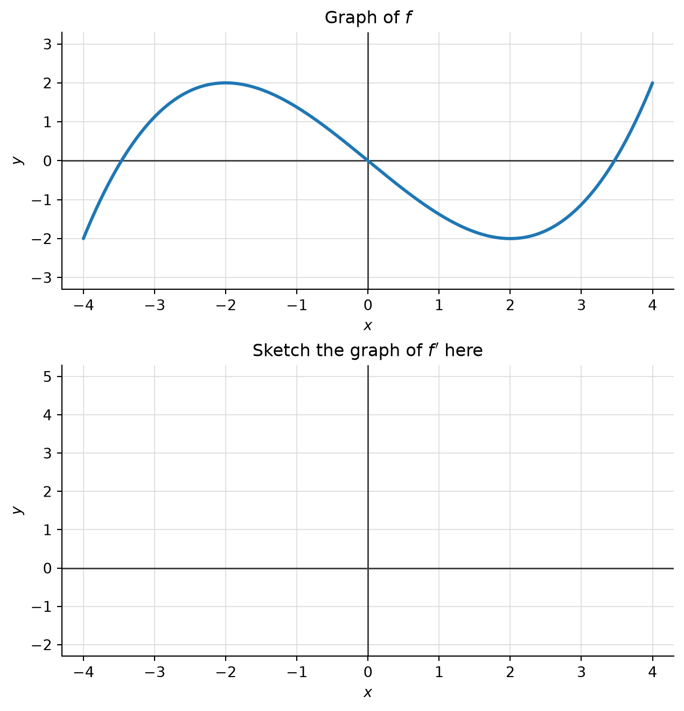
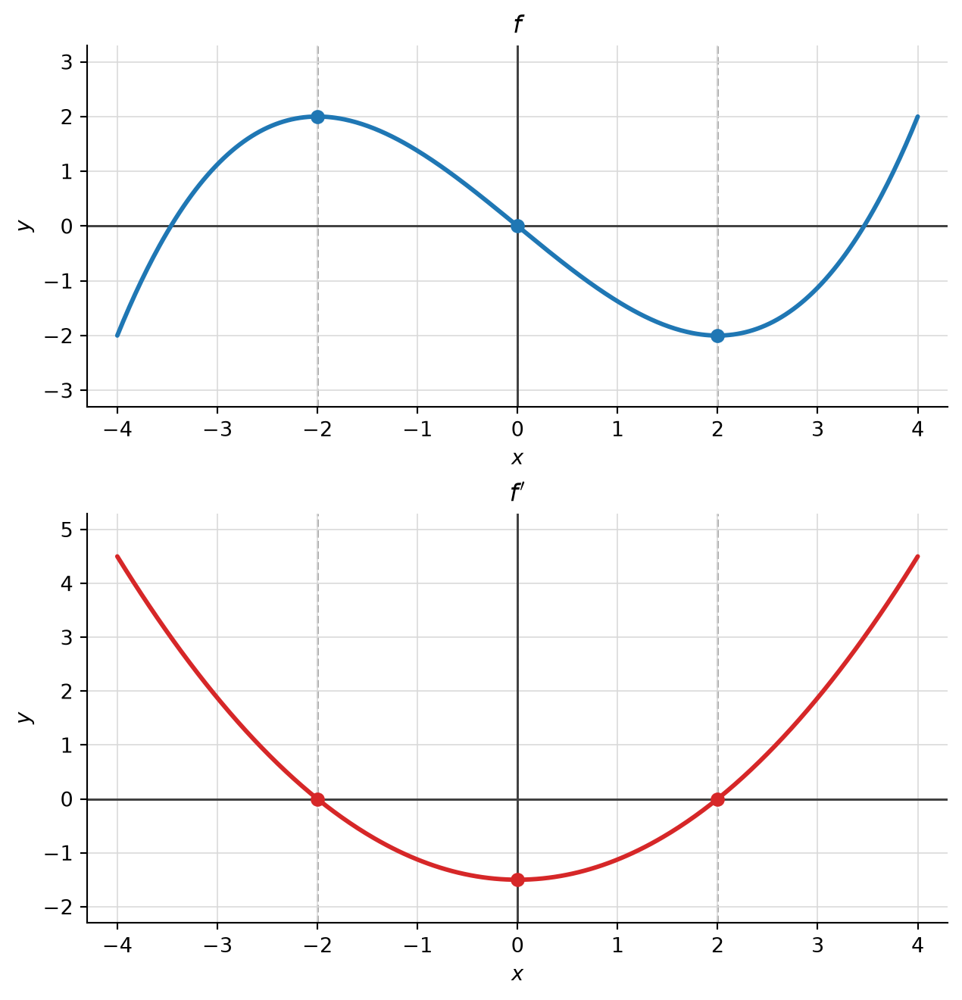
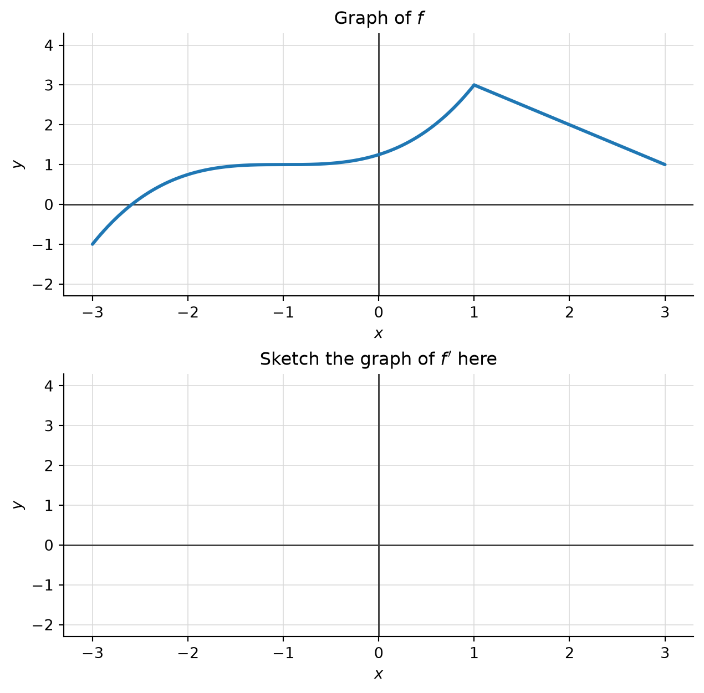
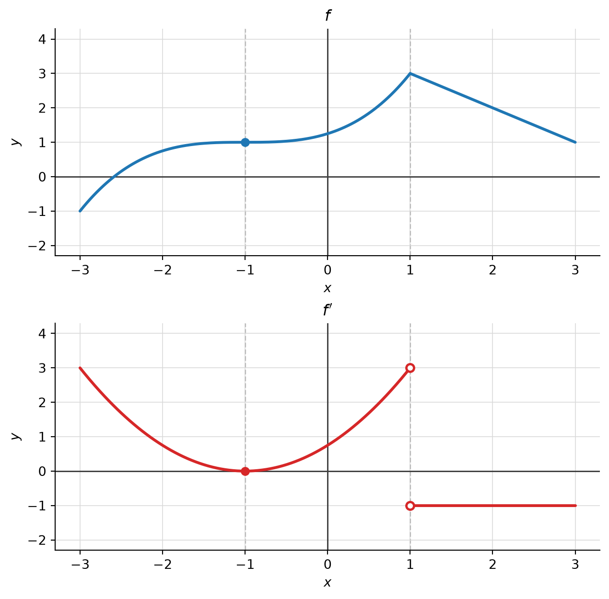
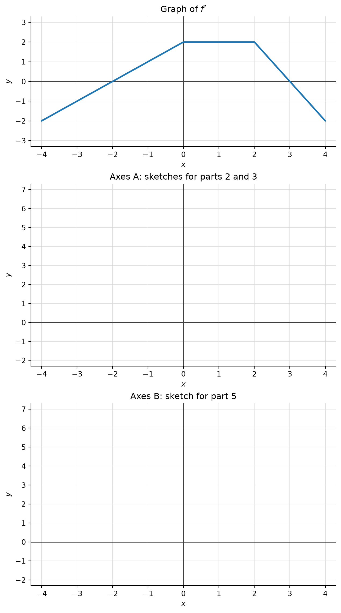
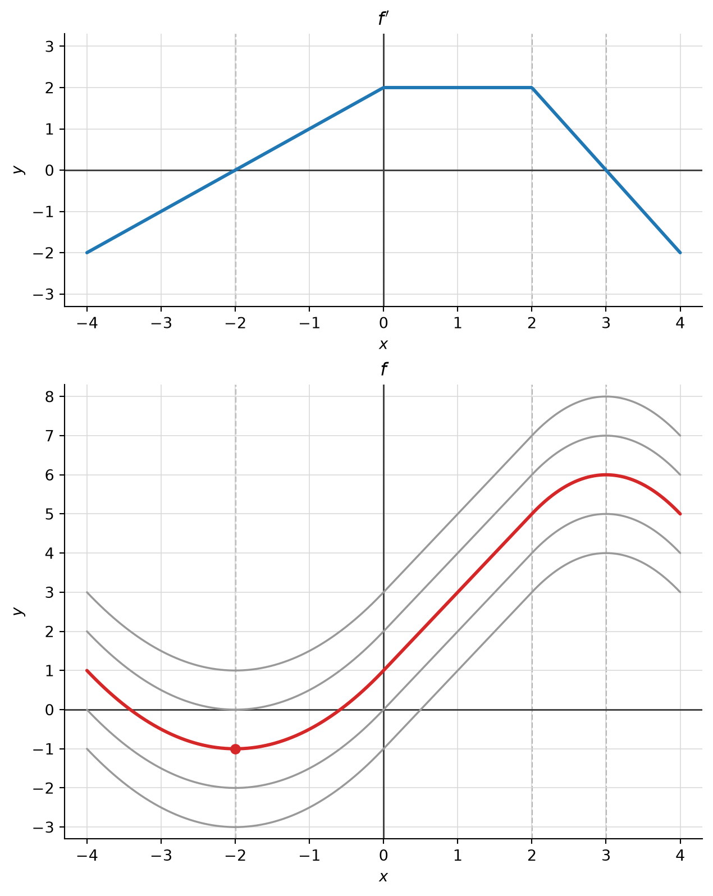
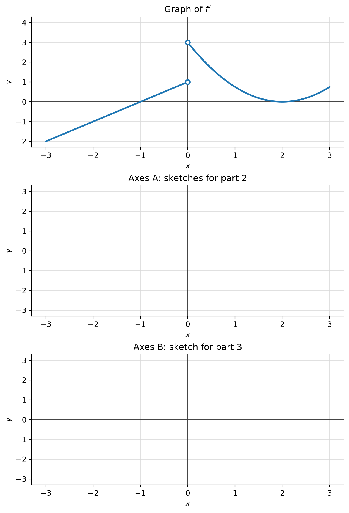
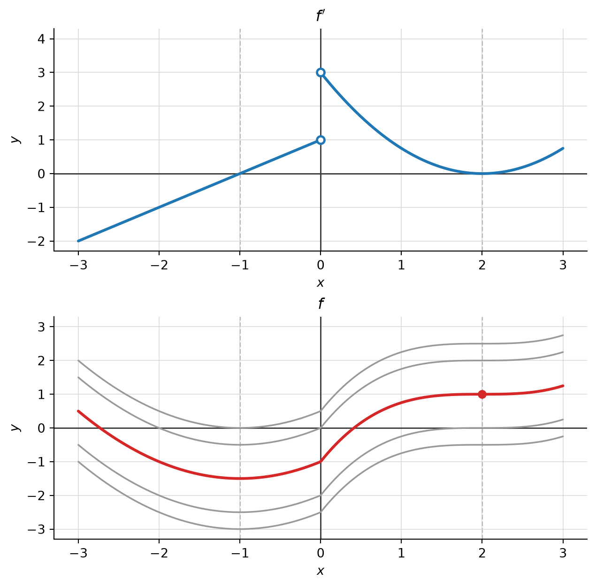

17 Activity: Reading Derivatives from Graphs
17.1 Background
For now we use the geometric meaning of the derivative: \(f'(x_0)\) is the slope of the tangent line to the graph of \(f\) at the point \((x_0, f(x_0))\). Reading off a slope from a graph means laying a ruler along the curve at \(x_0\) and measuring rise over run, using the grid squares. Doing this at every \(x\) produces a new function, \(x \mapsto f'(x)\), with its own graph.
17.2 Warm-up: a dictionary
NoteSolution
Solution.
| If the graph of \(f\) … | … then the graph of \(f'\) … |
|---|---|
| is increasing on an interval | lies on or above the \(x\)-axis there |
| is decreasing on an interval | lies on or below the \(x\)-axis there |
| has a horizontal tangent at \(x_0\) | meets the \(x\)-axis at \(x_0\): \(f'(x_0)=0\) |
| is a straight line of slope \(m\) on an interval | is the horizontal line at height \(m\) there |
| bends upward (is concave up) on an interval | is increasing there |
| bends downward (is concave down) on an interval | is decreasing there |
| changes from bending down to bending up at \(x_0\) | has a local minimum at \(x_0\) |
| has a corner at \(x_0\) | has no value at \(x_0\); it typically jumps there |
Note “on or above” in the first row, not “above”: \(x \mapsto x^3\) is strictly increasing, yet its tangent at \(0\) is horizontal. A zero of \(f'\) does not by itself signal a maximum or minimum. Problems 2 and 4 contain exactly this situation.
17.3 Part I: From \(f\) to \(f'\)
In each problem, the top panel shows the graph of \(f\). Sketch the graph of \(f'\) on the empty axes below it; the \(x\)-axes are aligned, so you can transfer \(x\)-coordinates straight down.
Problem 1
NoteSolution
Solution. The function is \(f(x) = \tfrac18(x^3 - 12x)\), so \(f'(x) = \tfrac38(x^2-4)\), an upward parabola.

| \(x\) | \(-4\) | \(-3\) | \(-2\) | \(-1\) | \(0\) | \(1\) | \(2\) | \(3\) | \(4\) |
|---|---|---|---|---|---|---|---|---|---|
| \(f'(x)\) | \(4.5\) | \(1.875\) | \(0\) | \(-1.125\) | \(-1.5\) | \(-1.125\) | \(0\) | \(1.875\) | \(4.5\) |
- Horizontal tangents at \(x=\pm2\) (local max at \(-2\), local min at \(2\)), so \(f'(\pm2)=0\).
- \(f\) increases on \([-4,-2]\) and \([2,4]\) (\(f'\ge 0\)) and decreases on \([-2,2]\) (\(f'\le 0\)).
- The steepest descent is at the inflection point \(x=0\), where \(f'\) has its minimum \(-1.5\).
- \(f\) bends down on \([-4,0]\) and up on \([0,4]\), matching \(f'\) decreasing, then increasing.
Problem 2

NoteSolution
Solution. On \([-3,1]\), \(f(x) = \tfrac14(x+1)^3 + 1\), so \(f'(x) = \tfrac34(x+1)^2\); on \([1,3]\), \(f(x) = 4-x\), so \(f'(x) = -1\).

- At \(x=-1\) the tangent is horizontal, yet \(f\) keeps increasing on both sides: there is no extremum. Accordingly the graph of \(f'\) touches the \(x\)-axis at \(-1\) without crossing it. (A “flat” inflection point, as for \(x^3\) at \(0\).)
- On \((1,3]\) the graph is a line of slope \(-1\), so \(f'\) is constantly \(-1\).
- Just left of \(1\) the slope is close to \(3\); just right of \(1\) it is \(-1\). No single tangent line fits at the corner, so \(f'(1)\) is undefined, and the graph of \(f'\) jumps from \(3\) to \(-1\). We draw open circles at both ends. Note that \(f\) itself is continuous at \(1\): continuity does not guarantee a derivative (C&J §2.8.e).
17.4 Part II: From \(f'\) back to \(f\)
Now the roles are reversed: the top panel shows the graph of the derivative \(f'\), and your task is to sketch \(f\) itself.
Problem 3

NoteSolution
Solution.

- \(f' < 0\) on \([-4,-2)\) and \((3,4]\), \(f'>0\) on \((-2,3)\): \(f\) decreases, then increases, then decreases, with a local minimum at \(x=-2\) and a local maximum at \(x=3\). Since \(f'\) increases on \([-4,0]\), \(f\) bends up there; on \([0,2]\), \(f'=2\) is constant, so \(f\) is a straight line of slope \(2\); on \([2,4]\), \(f'\) decreases, so \(f\) bends down.
- A correct sketch has all the features from part 1; where it sits vertically is up to you.
- Any two correct sketches differ by a vertical shift: the derivative only records slopes, and sliding a graph up or down changes no slope.
- If \(f\) is one such function, the others are exactly the functions \(f + C\), \(C\) a constant. That every function with the same derivative arises this way is a real theorem, not just a picture: it says that a function with derivative \(0\) on an interval is constant, which follows from the mean value theorem (C&J §2.8.h, §2.9.b). The graph of \(f'\) determines \(f\) only up to this one unknown number.
- The condition \(f(-2) = -1\) pins down the constant: of all the vertical shifts, exactly one passes through the point \((-2,-1)\). The red graph is the unique answer, with \(f(-4)=1\), \(f(0)=1\), \(f(2)=5\), \(f(3)=6\), \(f(4)=5\). (Explicitly: \(f(x)=\tfrac12x^2+2x+1\) on \([-4,0]\), \(f(x)=2x+1\) on \([0,2]\), \(f(x)=-x^2+6x-3\) on \([2,4]\).)
Problem 4
Here \(f\) is continuous on \([-3,3]\) and differentiable everywhere except at \(x=0\); its derivative is shown below.

NoteSolution
Solution.

- \(f'\) changes sign from \(-\) to \(+\) at \(x=-1\): a local minimum. At \(x=0\) the slope jumps from \(1\) to \(3\): \(f\) has a corner there (the reverse of Problem 2). At \(x=2\), \(f'\) touches zero without changing sign: \(f\) has a horizontal tangent but keeps increasing — no extremum. \(f\) bends up on \([-3,0]\) and on \([2,3]\), and bends down on \([0,2]\).
- Again, any two answers differ by a vertical shift.
- Only one shift passes through \((2,1)\): \(f(-3)=0.5\), \(f(-1)=-1.5\), \(f(0)=-1\), \(f(3)=1.25\). To reach the left half from the given point you must pass through the corner, and this is where the continuity of \(f\) at \(0\) is used (see Going Further, question 3).
17.5 Going further
NoteSolution
Solution.
- The area is \(2\) (triangle on \([-2,0]\)) \(+\ 4\) (rectangle on \([0,2]\)) \(+\ 1\) (triangle on \([2,3]\)) \(= 7\), and indeed \(f(3) - f(-2) = 6 - (-1) = 7\). The conjecture \[ f(b) - f(a) = \int_a^b f'(x)\,dx \] is the fundamental theorem of calculus (C&J §2.9). It explains the ambiguity in a second way: \(f'\) determines every difference \(f(b)-f(a)\), but not the starting height.
- On \(\mathbb{Q}\) the jump of \(h\) happens across a “hole” at \(\sqrt2\) that contains no input of \(h\). On \(\mathbb{R}\) there are no such holes: this is completeness (the nested interval principle). The proof that \(f'=0\) forces \(f\) constant goes through the mean value theorem, which in turn rests on completeness.
- No. On each of the two pieces \(f\) is determined up to its own constant, and without continuity the two constants are independent: the left half of the graph can be shifted up or down on its own. You need one value from each side of \(0\) — for instance \(f(2)\) and \(f(-1)\). The principle is: one value per interval on which \(f\) is differentiable.